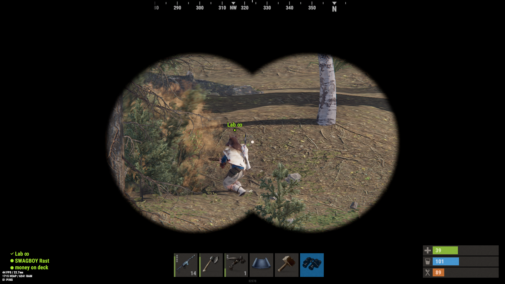

Inicios
Los primeros días de la Z Gang fueron una prueba de fuego que ninguno de nosotros olvidará. Llevábamos las cicatrices físicas y emocionales de un mundo que se desmoronaba ante nuestros ojos. La falta de alimentos, la escasez de recursos y la constante amenaza de saqueadores y criaturas mutantes nos atormentaban sin piedad. Las heridas de Lab, Rastas, Wachin_amarillo, Maximonfs y Yharim eran profundas, marcadas por la pérdida de amigos y seres queridos en el caos inicial. Sabíamos que esas heridas nunca sanarían por completo, pero nos aferramos a la esperanza y nos apoyamos mutuamente, reconociendo que solo juntos tendríamos una oportunidad de sobrevivir en este mundo implacable. En esos días oscuros, la Z Gang tomó medidas desesperadas para seguir adelante en el mundo postapocalíptico. Nuestros recursos eran limitados, y nos vimos obligados a fabricar arcos rudimentarios a partir de madera y chatarra, recurriendo a viejos manuales de supervivencia en busca de orientación. Aprendimos a tallar flechas a partir de palos y piedras afiladas, esperando atrapar cualquier presa pequeña que pudiera proporcionarnos algo de comida. La necesidad de protegernos de las inclemencias del tiempo y de las criaturas mutantes nos llevó a confeccionar nuestra propia ropa primitiva. Usamos telas desgarradas y trozos de cuero encontrados en tiendas de campaña y almacenes abandonados para crear prendas ásperas pero resistentes. Además, las pieles de los animales cazados nos brindaron un material adicional para confeccionar abrigos y capas que nos protegieran del frío. Con cada día que pasaba, nuestras habilidades de supervivencia crecían, y también lo hacía nuestra capacidad para construir refugios temporales en lugares estratégicos, como cuevas naturales o edificios abandonados. Aprendimos a recolectar agua de lluvia y a purificarla, minimizando así el riesgo de enfermedades transmitidas por el agua. Estos métodos primitivos pueden haber sido simples, pero fueron cruciales para nuestra supervivencia durante esos primeros días. Cada pequeño avance en nuestras habilidades de caza, fabricación y supervivencia nos acercaba un poco más a la adaptación a nuestro nuevo y despiadado entorno. A medida que el tiempo avanzaba, nuestras habilidades se volvieron más refinadas, pero nunca olvidaríamos los difíciles comienzos que forjaron nuestra resiliencia y determinación en este mundo donde la supervivencia misma estaba en juego.

Con el tiempo, comenzamos a evolucionar y adaptarnos a nuestro entorno hostil. Cada uno de nosotros se convirtió en una pieza clave en este rompecabezas de supervivencia en el mundo postapocalíptico. Ganamos experiencia con cada día que pasaba, y esa experiencia nos impulsó a ir más allá de nuestro refugio inicial. Nos aventuramos audazmente en el páramo desolado, persiguiendo la promesa de recursos valiosos y la oportunidad de mejorar nuestras habilidades y equipamiento. Uno de los hitos más notables fue la adquisición de la habilidad en la forja. Wachin_amarillo, con su talento innato para la ingeniería, transformó una antigua fundición en un hervidero de actividad. Allí, comenzamos a producir armas y herramientas de mayor calidad. Los arcos rudimentarios evolucionaron en potentes ballestas, capaces de enfrentar a criaturas mutantes que antes parecían invulnerables. Nuestras armaduras primitivas fueron reforzadas con piezas de metal y cuero reforzado, brindándonos una protección mucho mayor. Maximonfs siguió refinando sus habilidades como hacker, lo que nos permitió interceptar comunicaciones de saqueadores y bandas hostiles, dándonos una ventaja vital en la planificación de emboscadas y evitando conflictos innecesarios. Rastas se convirtió en nuestro líder de expediciones de caza y recolección, lo que resultó en el descubrimiento de fuentes valiosas de alimentos y recursos, como un manantial limpio que se convirtió en nuestra fuente segura de agua potable. Yharim, siempre estratega astuto, entrenó al grupo en tácticas de emboscada y defensa, fortaleciendo nuestra capacidad para proteger nuestro territorio y salvaguardar nuestros recursos. Con cada paso, nos volvimos más fuertes y resilientes. Aprendimos a cultivar, construir generadores de energía y fortificar nuestro refugio con materiales que antes considerábamos chatarra inútil. Nuestras ropas primitivas se convirtieron en trajes de combate personalizados, diseñados para resistir tanto el combate como las inclemencias del tiempo. A pesar de que el mundo postapocalíptico seguía siendo peligroso, habíamos avanzado desde nuestros humildes comienzos. Ahora estábamos mejor preparados para enfrentar los desafíos implacables que este mundo nos arrojaba. Pero sabíamos que la lucha por la supervivencia no había terminado; siempre había nuevas amenazas y desafíos que acechaban en el horizonte.
Tiempos Dificiles
Las noches en el mundo postapocalíptico eran oscuras y aterradoras, y formaban parte de nuestra vida cotidiana en la Z Gang. Como miembro de este valiente grupo, me tocó vivir esos momentos de tensión y miedo de primera mano. En cada uno de nosotros, el temor a las incursiones nocturnas estaba siempre presente. Sabíamos que desconectarnos era un lujo que no podíamos permitirnos, ya que convertiríamos nuestro refugio en un blanco fácil para los depredadores que acechaban en la oscuridad. Las noches se llenaban de susurros tensos y suspiros nerviosos mientras manteníamos nuestra guardia constante. Los turnos de guardia se convirtieron en una rutina nocturna, con uno de nosotros siempre en alerta, vigilando desde las sombras. El silencio era interrumpido solo por el crujir de las hojas o el sutil susurro del viento, que rápidamente se convertían en señales de alarma en nuestras mentes. Sabíamos que cualquier ruido podría ser la señal de un ataque inminente. Las emboscadas nocturnas eran una amenaza real y constante. Las bandas rivales esperaban pacientemente a que bajáramos la guardia, listos para atacar en cuanto detectaran una oportunidad. Cada sombra en la oscuridad nos hacía cuestionar si era un amigo o un enemigo, y cada paso en falso podía costarnos caro. Pero la Z Gang no se dejaba vencer por el miedo. Desarrollamos sistemas de alerta temprana, trampas ingeniosas y estrategias de defensa para mantener a raya a los intrusos nocturnos. Cada noche, aunque llena de incertidumbre, nos hacía más fuertes y más unidos como equipo. A medida que avanzábamos y nos adaptábamos a este mundo implacable, aprendimos a encontrar seguridad en nuestra camaradería y determinación. Las noches oscuras podían ser aterradoras, pero estábamos dispuestos a luchar por nuestra supervivencia, incluso en los momentos más oscuros y peligrosos de la noche.

Fue una mañana gris y nublada cuando la Z Gang se reunió en su refugio, mirando con determinación hacia un horizonte incierto. Nuestros suministros estaban llegando a su límite, y sabíamos que debíamos tomar medidas drásticas si queríamos seguir sobreviviendo en este mundo implacable. Habíamos escuchado rumores sobre la Plataforma Petrolífera, un lugar en el que se decía que abundaban los recursos y los tesoros olvidados del mundo antiguo. Pero también sabíamos que se rumoreaba que estaba infestada de peligros, desde saqueadores despiadados hasta criaturas mutantes letales. Lab, con sus conocimientos técnicos, trazó un plan audaz para la expedición. Planeó una ruta segura y estudió las posibles amenazas que podríamos encontrar en el camino. Wachin_amarillo y Maximonfs prepararon nuestros vehículos, asegurando que estuvieran listos para el largo viaje. Rastas lideró la carga de alimentos y suministros esenciales, mientras que Yharim se aseguró de que nuestras defensas estuvieran en su punto más alto. Cuando finalmente partimos, la Plataforma Petrolífera se alzaba ante nosotros como un monumento de esperanza y peligro. El viaje fue arduo y peligroso, enfrentando emboscadas de saqueadores y luchando contra criaturas mutantes en nuestro camino. Pero estábamos decididos a llegar a nuestro destino y recuperar los recursos que necesitábamos desesperadamente. Finalmente, cuando llegamos a la Plataforma Petrolífera, nos dimos cuenta de que los rumores no habían exagerado. El lugar estaba lleno de tesoros olvidados y suministros que podrían asegurar nuestra supervivencia durante mucho tiempo. Pero también estaba lleno de desafíos, y tuvimos que luchar valientemente para reclamar lo que necesitábamos. La decisión de zarpar hacia la Plataforma Petrolífera fue arriesgada, pero era un paso necesario en nuestro viaje de supervivencia. Nos recordó que en este mundo postapocalíptico, debíamos ser valientes y tomar medidas audaces para asegurar nuestro futuro. La Z Gang estaba dispuesta a enfrentar cualquier desafío en nuestro camino, porque sabíamos que la supervivencia de todos nosotros dependía de ello.
Superacion y dominación total
Con el tiempo, la Z Gang logró una dominación total en el servidor, gracias a la enorme cantidad de experiencia adquirida y a nuestras habilidades afiladas por el combate y la supervivencia. Nuestro refugio se había convertido en una fortaleza impenetrable, y nuestras expediciones a la Plataforma Petrolífera y otros lugares peligrosos nos habían proporcionado un arsenal de armas avanzadas y recursos abundantes. Nuestra fama como el grupo más formidable y resistente del servidor se propagó rápidamente. Los saqueadores y bandas rivales pensaron dos veces antes de desafiarnos, y las criaturas mutantes aprendieron a mantenerse alejadas de nuestro territorio. Habíamos alcanzado un punto en el que podíamos permitirnos relajarnos de vez en cuando, al menos por un breve tiempo. En las noches tranquilas, después de un largo día de patrullas y fortificaciones, nos reuníamos en nuestro refugio fortificado. Encendíamos fuego, compartíamos historias y, en ocasiones, nos relajábamos escuchando canciones que habíamos encontrado en viejos dispositivos electrónicos. Era un raro momento de paz en un mundo despiadado. Las canciones, algunas de las cuales hablaban de tiempos mejores y lugares olvidados, nos recordaban el mundo que una vez existió antes de la catástrofe. Nos permitían desconectar, al menos por un breve momento, de las preocupaciones constantes y las amenazas que rodeaban nuestra vida diaria. Aunque disfrutábamos de esos momentos de relajación, nunca bajábamos completamente la guardia. Sabíamos que en este mundo postapocalíptico, la tranquilidad era efímera y siempre había nuevas amenazas al acecho. Pero por un tiempo, en esas noches tranquilas y melódicas, podíamos dejar de lado nuestras preocupaciones y simplemente ser seres humanos, recordando que la esperanza y la camaradería aún tenían un lugar en este mundo oscuro y desafiante.